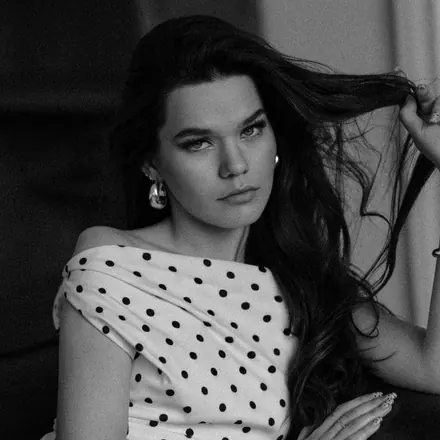
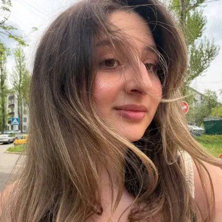
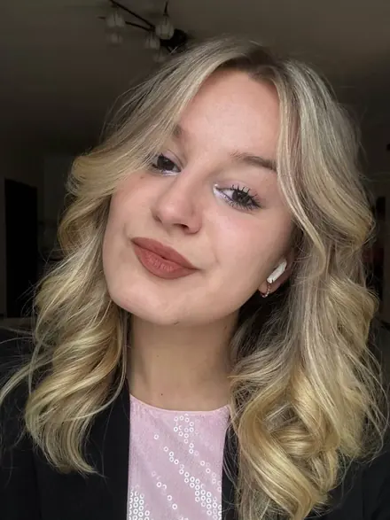
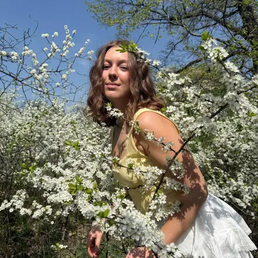

№ 01
Соня
Викулек! С днём рождения, моя дорогая! Желаю тебе океан счастья, горы смеха и море любви! Ты — самая лучшая! Целую!
твоя подруга
Закрытый спецвыпуск · капсула №21
До публикации личного выпуска осталось:
Номер запечатан до 18 ноября 2026
Сигнал получен
СПЕЦВЫПУСКЭксклюзивный подарочный спецвыпуск: 5 любимых подруг, секретные кассеты, космические архивы NASA, пушистый оракул и тайные воспоминания!

Запечатлей момент и оставь себе послание — вскроем 18 ноября 2027-го.
Ты посмотрела все рубрики. Теперь твоя очередь: сделай снимок и оставь себе послание. Запечатаем до следующего дня рождения.
Вскроется 18 ноября 2027 года. До встречи, Викулек ❤️
Семь голосов, шестьдесят кадров. Каждая принесла свой архив.
журнал · личный архив · подруги
Викулек! С днём рождения, моя дорогая! Желаю тебе океан счастья, горы смеха и море любви! Ты — самая лучшая! Целую!
твоя подруга

С днем рождения, блин! Пусть каждый день будет как любимая песня из нулевых, а бокал никогда не пустеет!
Наш архив 3
твоя подруга
Викулик, с днём рождения, моя родная! Пусть в твоей жизни всё будет так, как должно быть! Люби и будь любима! Я тебя очень люблю! ❤️
Наш архив 15
твоя подруга

Викуша, моя маля, краля, сестрица, поздравляю тебя с твоим днём! Будь самой счастливой! Оставайся такой же яркой, нежной, доброй, весёлой звёздочкой, никогда в себе не сомневайся и ни за что себя не ругай. Все цели обязательно сбудутся, а в это время рядом будем мы — твои близкие. Очень люблю ❤️
Наш архив 11
твоя подруга

Виктория, моя победа, рыба и сИкрет, с днём рождения, родная!❤️❤️❤️❤️
мой соулмейт по всем аспектам жизни, люблю тебя до луны и обратно, не перестану говорить спасибо судьбе, что подарила мне такого светлого, невероятно доброго и зажигательного человечка!
желаю тебе никогда не сомневаться в себе, ведь ты можешь всё, если захочешь!!
давай себе иногда вздыхать полной грудью, и встречай любые неприятности со спокойствием на душе!🙏🏼
пусть этот год жизни станет для тебя ещё одной не менее интересной главой, которую захочется перечитывать снова и снова, а рядом будут такие же прекрасные люди, как и ты! 🫂
продолжай также заряжать своей безумно яркой энергией других и самой никогда не потухать! ты звёздочка, каких только поискать, поэтому сияй, моя красотка, бери от этой жизни максимум и кайфуй от процесса, не бойся пробовать что-то новое!
с твоим днём,
скорпиончик моего сердца!💘💘💘
Наш архив 10
твоя подруга
любимик, с твоим днём! спасибо тебе за твою поддержку, твой смех, твои шутки, за то, какая ты настоящая. желаю тебе крепкого здоровья! ты заслуживаешь всего самого лучшего! пусть твоя жизнь сложится так, как ты это представляешь! пусть мечты станут целями и будут достигнуты! пусть каждый день приносит счастье! я всегда рядом! будь любима и счастлива, дорогая!
Наш архив 8
твоя подруга

Викуля, моя ты лпешечка❤️🔥, хочу тебя поздравить с днем рождения 🎇🍾
Я тебя очень ценю и люблю, не знаю как так сошлись звезды когда наши жизни пересеклись. 🫶🏼Ты лучший человечек, с тобой всегда есть о чем поговорить, не важно на какую тему мы общаемся. Ты всегда сможешь выслушать и помочь словом. ❤️🩹
Пересматривала свою галерею и поняла, что большую часть фотографий с кем то занимаешь ты 🫶🏼
За прошедшее время столько всего прошло, мы были и в жопе (как всегда) и в лучших днях, но не важно какой это был день, главное с кем я этот день проводила❤️🩹
Я тебе желаю всего-всего только самого лучшего, достижения всех своих целей, уверенности в завтрашнем дне и главное конечно здоровья🫀
Главное в жизни тебе спокойствия 🧘🏽♀️, остальное само прийдет.
С твоим днем, целую💋
Наш архив 10
твоя подруга
Личный архив с секретным кодом. Кассета, альбом и история в трёх актах.
От меня — с секретным кодом
От меня
«И в этот день зажглась самая яркая звезда во всей вселенной ❤️🌞»
Всё остальное — внутри шкатулки.
Side C · история
Семь актов одной ночи: он стоит на мокром асфальте под её окном и ждёт. Внутри — кодовый замок на ларце и маска, которую надо поднять вверх.
Письмо, видео и фотографии лежат внутри. Открыть её можно только в истории — акт с ларцом на одеяле.
четыре цифры · 16 мая
Ты самая необыкновенная, самая яркая и самая незабываемая. Спасибо твоим родителям и тебе за тебя ❤️ Так много хочу сказать тебе. Но наверное я сделаю это лично.
— Милка
Нажми на снимок, чтобы увеличить · листай стрелками
проявлено 0 / 24Side C · наш пропуск
Милка & Викулек
Вместе на все 21 — и дальше.
Side C · движущееся
Собрала для тебя кусочки наших дней. Жми play ❤️
Род Русиново, три поколения. Древо, портрет маслом и четыре кассеты.
Род Русиново
Послание Сердца
«Викулек, моя ненаглядная доченька! Ты самое светлое, что есть в моей жизни. Сияй ярко, цвети и будь безмерно счастлива!»
Крепкая Опора
«Доченька, горжусь тобой каждый день! Смело шагай к своим целям, за твоей спиной всегда стоит сильная семья и род Русиново!»
Мудрость Рода
«Викуля, с 21-летием! Желаю отличного настроения, верных друзей и лёгкости во всех делах! Русиново с тобой!»
Молодое Поколение
«Поздравление скоро появится — текст готовится.»
Любовь & Забота
«Любимая сестренка! С твоим днем! Ты моя радость и вдохновение, пусть каждый день дарит улыбки и кайф!»
Драйв & Веселье
«Викулек, с 21-летием! Зажигай на полную, мы с тобой всегда на одной волне! Обнимаю крепко!»
Благословение
«Внученька, радость наша! Пусть здоровье будет богатырским, а жизнь сладкой, как яблоки в нашем русиновском саду!»
Тепло & Пироги
«Моя ласточка Викулька! Храню тебя в молитвах и сердце, пусть в душе всегда цветет май!»
Сила Духа
«Викулек, взрослая красавица стала! Будь стойкой, мудрой и любимой, род наш крепкий!»
Сердечный Покой
«Золотце моё ясное! Счастья тебе женского, мира и радости каждый Божий денек!»
Скрапбук родовых связей: древо рода одной картиной, парадный портрет маслом в золотом багете и ретро-ТВ Русиново с 4 кассетами VHS!
Четыре голоса будущего. Гадания, защиты и хрустальный шар.
ИНТЕРАКТИВ · ПУШИСТЫЕ ХРАНИТЕЛИ
Защита
Вильзивул ставит защиту на будущее
Хрустальный шар
Макс заглядывает в шар и колдует над будущим
Таро
Абадон раскладывает карты и даёт загадочное предсказание
Кошачья лапка
Кот тянет лапкой жребий удачи
Двадцать два кадра — по одному на каждый год. Хроника без слов.
18 ноября · NASA APOD, каждый год жизни
Каждый день NASA публикует Astronomy Picture of the Day — снимок, сделанный в этот день. Здесь собраны все записи именно за 18 ноября: от дня рождения в 2005 году до 2026-го. Это реальные фотографии NASA, по одной на каждый год жизни.
Источник: NASA Astronomy Picture of the Day (apod.nasa.gov). 19 фотографий · 2 видеозаписи · 1 год ещё впереди. Нажмите на снимок, чтобы открыть его крупно.
Шесть глав, таймер и маска, которую надо снять.
Соня, Полина, Кира, Вилена, Нютик, Софа и Катя — с их фото, CD-микстейпами, тостами и сценарием «Party Mode 4»!
История «РАЗРЕЗ», шкатулка с замком на четыре цифры, письмо, видео и 18 кадров из архива.
Древо рода одной картиной, парадный портрет маслом, листаемый фотоальбом и кинескопный ретро-ТВ с 4 кассетами VHS!
Тёмный Пушистый Триумвират: парящие хрустальные порталы Вильзивула, Макса и Абадона!
Снимки NASA за 18 ноября каждого года жизни: 19 фотографий с 2005 по 2025 и слот, который заполнится 18.11.2026.
18 ноября 2026 года • 00:00